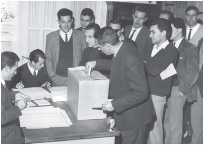
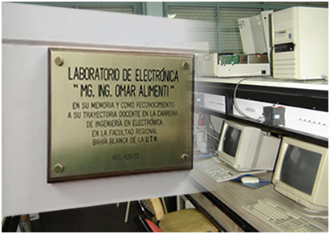

-
Creación de la Universidad Obrera Nacional
19 de agosto de 1948: creada. 7 de octubre de 1952: formalizadaEl desarrollo industrial que se evidencia durante la década de 1940 requería la formación de mano de obra calificada. En 1944 se creó la Comisión Nacional de Aprendizaje y Orientación Profesional (CNAOP), organismo encargado de regular la formación de los jóvenes vinculados con las fábricas.
Fue creada por Ley nº 13.229 del 19 de agosto de 1948 . No obstante, esto recién se concretó cuatro años más tarde, cuando el 7 de octubre de 1952 fue reglamentada dicha ley, siendo inaugurada el 17 de marzo de 1953. Aquella fecha se fijó como la de fundación. Las primeras Facultades Regionales fueron Buenos Aires, Santa Fe, Rosario y Córdoba (dos años después se abrirían Mendoza, Bahía Blanca, La Plata, Tucumán y Avellaneda).
La orientación a la clase trabajadora se hace explícita en la restricción al ingreso, siendo necesario como requisito comprobar la condición de trabajador. El título que se entregaba era Ingeniero de Fábrica
-
Facultad Regional Bahía Blanca
28 de enero de 1954: acta de creaciónLa Facultad Regional Bahía Blanca (FRBB) de la Universidad Obrera Nacional (UON) fue creada el 28 de enero de 1954. Inicialmente se implementaron las Ingenierías Mecánica, Construcciones y Electrotecnia con una matrícula de 50 alumnos.
Su primera sede estuvo ubicada en la esquina de Rodríguez y Zelarrayán en dependencias cedidas a préstamo por la Universidad Nacional del Sur (UNS), en ese entonces Instituto Tecnológico del Sur.
-
Estructura departamental de la Facultad
1956: La Facultad se organiza en DepartamentosLa estructura académica de la Facultad se organizó a partir de 1956 en Departamentos. Estos se constituyeron como las unidades fundamentales para entender en el dictado de las asignaturas, agrupándolas de acuerdo a cada especialidad y por afinidad. Así, las materias básicas comunes formaban un Departamento propio, mientras que las restantes constituían los que entendían generalmente en las específicas de cada carrera.
Esta estructura se mantiene en la actualidad, existiendo en la Facultad local los Departamentos de Materias Básicas; de Ingeniería Civil; de Ingeniería Mecánica; de Electrotecnia; de Ingeniería Electrónica y de Licenciatura en Organización Industrial. Cada Departamento era y es el encargado de diseñar, controlar y actualizar el perfil de las carreras que dicta, mediante la puesta en marcha y seguimiento del currículo y de los métodos didácticos de enseñanza-aprendizaje acordados.”
-
Cambio de nombre de UON a Universidad Tecnologica Nacional
14 de octubre de 1959: Aprobación del proyecto en la Cámara de Diputados de la NaciónEl 17 de septiembre de 1958 la Comisión de Educación del Senado, presentó el proyecto de ley sobre reestructuración y cambio de nombre de la UON.
El nombre de “Obrera” resultaba incorrecto si se atendía a la condición del alumnado.
La exigencia de estudios secundarios completos determinaba que sus cursos quedaran fuera del alcance de los obreros a menos que éstos hubieran completado los estudios antedichos; en tal caso, no le cuadraba el nombre de obreros sino el de técnicos. Se hacía notar, además, que la denominación de Universidad Tecnológica “está actualmente más difundida que la designación oficial de Universidad Obrera que todavía mantiene...”
-
Nuevo sistema de Ingreso a las Facultades
Año 1960: Se extiende el ingreso a graduados de escuelas no técnicasA partir de 1960 las Facultades de la UTN extienden el ingreso a los egresados de ciclos completos de segunda enseñanza con título de Bachiller, Perito Mercantil, Maestro Normal o equivalentes a juicio de la Facultad respectiva.
Los aspirantes debían someterse a una prueba de selección sobre tres materias: Matemática Aplicada, Dibujo y Nomenclatura Técnica. Este examen era de carácter selectivo, es decir, que sólo ingresaban los alumnos mejor calificados en un cupo dispuesto por cada Facultad, dentro de las vacantes disponibles
-
Primera colación de grado de la FRBB
16 de noviembre de 1962: Primera colación de gradoLa colación reunió a trece nuevos ingenieros, que pertenecían a diversas promociones, quienes recibieron su título en el salón de actos de la Biblioteca Rivadavia. El primer graduado de la Facultad fue el ingeniero Eduardo R. Schulz.
Primer Estatuto de la Universidad Tecnológica Nacional
31 de agosto de 1962: aprobado por la Asamblea UniversitariaEl 31 de agosto de 1962 fue aprobado por la Asamblea Universitaria el 1° Estatuto de la Universidad Tecnológica Nacional que rigió su funcionamiento desde marzo de 1963. Adecuaba la universidad al esquema básico de los demás establecimientos de educación superior: representación de docentes, graduados y estudiantes, elección de autoridades, periodicidad de la cátedra, etc.
Posteriormente la ley 16712/65 sobre equiparación legal, completaría el proceso de transformación.
-
Localización de la actual sede de la FRBB
Año 1963: Adquisición del inmuenble de calle 11 de Abril 461 y Construcción de la 1° torre de cinco pisosSe adquiere un inmueble de tipo residencial de estilo francés construido en 1902, de 600 m2, ubicado en la calle 11 de Abril 461, dirección actual de la Facultad. Algunas aulas funcionaron en la vecina Escuela de Comercio, dependiente de la UNS. Se inicia simultáneamente la construcción de la 1° torre de cinco pisos y 2.455 m2 destinada a laboratorios y aulas, finalizada en 1968.
Elecciones democráticas de la FRBB
15 de mayo de 1963: Primeras elecciones en la FacultadA nivel local el gobierno de cada Facultad recaía en el Consejo Académico, los Consejos Departamentales y en la figura del Decano, que dura tres años en el cargo y es elegido a través de un colegio electoral conformado por todos los claustros.
El 15 de mayo, en una sesión realizada por El Colegio Electoral fue electo el Ing. Vicente Egidi como decano de la FRBB, quien asumió sus funciones el 7 de junio de 1963.
-
Ampliación de la actual sede de la FRBB
Año 1974: habilitación parcial de la segunda torre de 10 pisosUna segunda torre de diez pisos y 4.159 m2 destinada a aulas y áreas administrativas fue habilitada parcialmente en 1974 y finalizada por completo en 1993. Mientras tanto se logra equipar los laboratorios de los distintos departamentos.
-
Creación del Departamento de Extensión Universitaria
Año 1975: actual Secretaría de Cultura y Extensión Universitaria.Para potenciar las relaciones Universidad-Empresa-Sociedad se crea en 1975 el Departamento de Extensión Universitaria, actualmente Secretaría de Cultura y Extensión Universitaria.
-
Creación del Grupo de Análisis de Sistemas Mecánicos
Año 1979: Se inician tareas de investigación.Se inician tareas de investigación científica y tecnológica mediante la creación del Grupo Análisis de Sistemas Mecánicos, dependiente de la SCyT del Rectorado.
-
Carrera de Ingeniería Electrónica
Año 1985: implementación de la carrera.Se implementa la carrera de Ingeniería Electrónica con salida intermedia de Técnico Universitario en Electrónica.
-
Creación de la Subsecretaría de Asuntos Estudiantiles
Año 1986: Subsecretaría de Asuntos Estudiantiles.Debido al crecimiento de la matrícula, se crea la Subsecretaría de Asuntos Estudiantiles, hoy transformada en Secretaría. Se brinda una asistencia integral al alumnado con un sistema de Salud, Deportes, Becas y Pasantías.
-
Postítulo Ingeniería Laboral
Año 1987: Se implementa la carrera de postítulo Ingeniería Laboral.Una nueva posibilidad de capacitación se inició en 1987, surge la carrera Ingeniería Laboral con una duración de 2 años. Diseñada para capacitar en la creación e implementación de programas de trabajo en la materia, así como desarrollar e implementar sistemas e instalaciones de seguridad en ambientes laborales.
Los primeros alumnos que se graduaron en esta carrera recibieron sus diplomas en 1988 siendo los primeros que obtuvieron el título de Ing. Laboral en el país.
-
Gabinete Psicopedagógico
Año 1988: Surge el Gabinete Psicopedagógico.La voluntad de mejorar el proceso de enseñanza-aprendizaje motivó el surgimiento en la Facultad de espacios para la reflexión sobre el tema. Así se creó el Gabinete Psicopedagógico, actualmente denominado Gabinete Interdisciplinario.
Su tarea consistió en constituirse como centro principal de este debate, y generar la discusión que facilitó revisiones posteriores sobre la actividad académica y los currículos. Dentro de estas tareas, la Facultad inició en 1989 un proceso de revisión, actualización y mejora de sus sistemas de enseñanza que se volvería casi permanente.
-
Creación de la Secretaría de Ciencia y Tecnología - Fundatec
Año 1990: creación de la Secretaría de Ciencia y Tecnología.Surge la Secretaría de Ciencia y Tecnología para dar cabida a los diversos grupos y proyectos de investigación en continua expansión. Simultáneamente, se lanza la Fundación Facultad Regional Bahía Blanca de la UTN - FUNDATEC.
-
Postítulo Ingeniería Laboral
Año 1991: Se implementa la carrera de postítulo Ingeniería Laboral.Se implementa la carrera de postítulo Ingeniería Laboral.
-
Secretaría Administrativa
Año 1992: Creación de la Secretaría Administrativa.Sus comienzos se remontan al año 1954 cuando inicia sus actividades la Facultad en la calle Rodríguez y Zelarrayán, en ese momento, en la oficina de administración, eran tres personas de los cuales dos eran bedeles las que la formaban. Posteriormente se denominó Departamento de Administración y en 1992 cambió a Secretaría Administrativa.
En el año 2002 se dio el nombre de Mabel E. Ornella a las oficinas de la Dirección de Administración en homenaje a su trayectoria dentro de la facultad como Tesorera.
-
Carrera de Licenciatura en Organización Industrial
Año 1993: Licenciatura en Organización Industrial.Se implementa la carrera de Licenciatura en Organización Industrial. Surgió definida como “una carrera tecnológica, también económica”. Su plan de estudios se creó como una conjunción entre las disciplinas básicas de la carrera Ingeniería Industrial, con el agregado de materias relacionadas con la economía y la administración de empresas.
-
40º aniversario de la Facultad - Homenajes
Año 1994: Homenaje al Ing. Vicente Egidi.El Consejo Académico dio su nombre al conjunto edilicio de la misma, como un merecido reconocimiento a quien dedicara ingentes esfuerzos al crecimiento y desarrollo de la Casa. Fue el 1° Decano de la Facultad, elegido en 1963. Posteriormente al retorno de la democracia en 1983 se lo designó como decano normalizador en 1983.
Sus reelecciones se sucedieronen 1989, 1993 y 1997. Entre sus reconocimientos cuentan haber sido nombrado Profesor Consulto y recibir el título honorario de “Decano de decanos”.
Año 1994: Homenaje al Ing. Duilio Sirio Marchesi.El Ing. Duilio Sirio Marchesi fue el primer Secretario Técnico de la institución, en épocas en la que ese cargo era virtualmente ser un decano. Su nombre se dio a las instalaciones de la biblioteca como homenaje a su trayectoria.
-
Cambios Académicos en la Facultad
Año 1995: Ingeniería Civil reemplaza a Ing. en Construcciones.Nace como consecuencia de las quejas de los graduados que argumentaban que no podían competir, en materia laboral, ante graduados de otras universidades con ese título. En 1988 se aprueba la aplicación de un nuevo plan de estudios de la carrera de “Ingeniería en Construcciones - Civil”.
El objetivo era que los estudiantes tengan la posibilidad de acceder a ese título, agregándole al plan de estudio cinco materias troncales relacionadas con las especialidades de la Ing. Civil. A partir de 1995 se implementa la carrera de Ingeniería Civil que reemplazó por completo a Ing. en Construcciones.
Año 1995: Creación de la carrera Técnico Superior en Industrias Alimentarias.Con la firma de acuerdos con empresas de la ciudad dedicadas al rubro alimenticio, como Barrita de Oro, Frigorífico Paloni, Cervecería Santa Fe, la Cooperativa Obrera, Virgilio Manera y Oleaginosa Moreno, entre otras; se creó la carrera de Técnico Superior en Industrias Alimentarias.
Esta alternativa, cuya duración curricular es de dos años, se concretó durante dos períodos de inscripciones consecutivas a partir de 1995, repitiéndose en 1999 un nuevo período de dos inscripciones. Hoy en día la carrera fue descontinuada.
-
Creación del Grupo de Estudios de Bioingeniería (GEBI)
Año 1996: Inició sus tareas. Fue creado por la por Resolución Nº114/96El GEBI trabajó por convenio con el Hospital Interzonal "Dr. José Penna" de Bahía Blanca, y fue inicialmente creado para el asesoramiento de los becarios y pasantes.
Investigó sobre la radiación electromagnética y su relación con la salud humana, y participa en la Comisión de Radiaciones Electromagnéticas (Comisión REM) del Honorable Concejo Deliberante de Bahía Blanca
-
Formación del Grupo de Vinculación Tecnológica -GVT-
Año 1997: Formación del Grupo de Vinculación Tecnológica.Sus funciones se relacionan con la promoción de la vinculación entre la Facultad y empresas y organismos tanto privados como públicos. La motivación principal para la creación de este grupo radicó en la creciente expansión de las actividades económicas y productivas de la región de influencia de la Facultad en esos años.
Este grupo obtuvo en 1998 para la Facultad la condición de Unidad de Vinculación Tecnológica (UVT). En el año 2007 se creó el Centro de Capacitación y Certificación de Competencias Profesionales (C4P) con el fin de capacitar a personas provenientes, en su mayoría, de sectores vulnerables de la sociedad: subocupados y desocupados.
-
Especialización de posgrado en Ingeniería Ambiental
 Año 1999: Carrera de especialización de posgrado Ingeniería Ambiental.
Año 1999: Carrera de especialización de posgrado Ingeniería Ambiental.La Facultad ha iniciado desde fines de la década del ´80 una serie de actividades en relación a temáticas vinculadas al medio ambiente. Primero se crea Grupo de Estudio de Ingeniería Ambiental (GEIA) que surge como consecuencia de la radicación del polo petroquímico.
Esto motivó a que el grupo GEIA implemente la carrera de especialización de posgrado Ingeniería Ambiental, que tiene como propósito profundizar los conocimientos referidos a la ingeniería en temas tales como la evaluación y la gestión de los riesgos ambientales en ámbitos privados como públicos, el manejo de tecnologías para el tratamiento de residuos y la remediación de sitios contaminados, y la prevención de la contaminación entre otros
Edición de la Revista UTecNoticias
Año 1999: Comienza a editarse la Revista UTecNoticias.Comenzó a editarse en 1999. Su objetivo es difundir las actividades académicas, de investigación, extensión y servicios que se realizan en la Facultad. Hasta comienzos de 2018 se imprimió en formato papel con una tirada que rondaba los mil ejemplares, distribuyéndose en forma gratuita entre graduados y entidades de la ciudad y la región, así como al público en general.
A partir de junio de 2018 solo se edita en formato digital. Su realización se materializa gracias al aporte publicitario de instituciones y empresas comprometidas en el apoyo a la Facultad que suman su contribución para ello.
Acreditación de las carreras de Ingeniería
Año 2000: 1° Proceso de acreditación de carreras de grado por parte de la CONEAU.A partir del año 2000 la Facultad inició su proceso de Autoevaluación, y consecuentemente, siguiendo los lineamientos establecidos por la CONEAU, de acreditación de sus carreras de ingeniería. La CONEAU en conjunto con el Poder Ejecutivo estableció doce carreras que debían acreditarse a nivel nacional estando dentro de ellas las ingenierías.
Según el sistema, las propias instituciones solicitan la acreditación que se realiza por parte de pares evaluadores reconocidos por el Ministerio de Educación.
Por su parte, la UTN resolvió mediante su Consejo Superior apoyar la iniciativa del CONFEDI pero de manera crítica, sumándose así al proceso de acreditación. La evaluación realizada por los pares designados por la CONEAU finalizó con sendos dictámenes sobre las cuatro ingenierías, que reconocieron la calidad de las materias y especialidades en su conjunto dictadas en la Facultad.